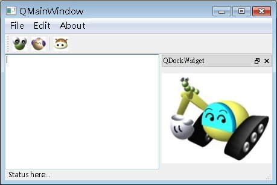

QMainWindow類別提供一個標準的應用程式視窗，當中可以包括選單（QMenuBar）、工具列（QToolBar）、狀態列（QStatusBar）、停駐元件（QDockWidget）等元件。
直接以範例來說明如何使用QMainWindow類別，在當中會有一個文字編輯區、選單、工具列、狀態列與一個停駐元件：
#include <QApplication>
#include <QMainWindow>
#include <QTextEdit>
#include <QMenuBar>
#include <QAction>
#include <QToolBar>
#include <QStatusBar>
#include <QDockWidget>
#include <QLabel>
#include <QPixmap>
int main(int argc, char *argv[]) {
QApplication app(argc, argv);
QMainWindow *mainWindow = new QMainWindow;
mainWindow->setWindowTitle("QMainWindow");
// 文字編輯區
QTextEdit *textEdit = new QTextEdit;
textEdit->setFocus();
mainWindow->setCentralWidget(textEdit);
// 蹦現選單
QMenu *fileMenu = new QMenu("&File");
QAction *fileAction = new QAction("Open..", fileMenu);
// 快捷鍵 Ctrl+O
fileAction->setShortcut(Qt::CTRL + Qt::Key_O);
fileMenu->addAction(fileAction);
fileMenu->addAction("Save");
fileMenu->addAction("Save as...");
// 分隔線
fileMenu->addSeparator();
// 快捷鍵 Ctrl+X，動作連接至 QApplication 的 quit()
fileMenu->addAction("Close", &app, SLOT(quit()), Qt::CTRL + Qt::Key_X);
QMenu *editMenu = new QMenu("&Edit");
editMenu->addAction("Cut");
editMenu->addAction("Copy");
editMenu->addAction("Paste");
QMenu *aboutMenu = new QMenu("&About");
aboutMenu->addAction("About");
mainWindow->menuBar()->addMenu(fileMenu);
mainWindow->menuBar()->addMenu(editMenu);
mainWindow->menuBar()->addMenu(aboutMenu);
// 工具列
QToolBar *toolBar = new QToolBar("QToolBar");
toolBar->addAction(QIcon("caterpillar_head.jpg"), "caterpillar");
toolBar->addAction(QIcon("momor_head.jpg"), "momor");
toolBar->addSeparator();
toolBar->addAction(QIcon("bush_head.jpg"), "bush");
mainWindow->addToolBar(toolBar);
// 狀態列
QStatusBar *statusBar = mainWindow->statusBar();
statusBar->showMessage("Status here...");
// 停駐元件
QDockWidget *dockWidget = new QDockWidget("QDockWidget");
QLabel *label = new QLabel;
label->setPixmap(QPixmap("caterpillar.jpg"));
dockWidget->setWidget(label);
mainWindow->addDockWidget(Qt::RightDockWidgetArea, dockWidget);
mainWindow->show();
return app.exec();
}
QMainWindow的setCentralWidget()用來設定主視窗的中央元件：
mainWindow->setCentralWidget(textEdit);
每個QMenu實例中的選項為QAction的實例，QMenu的addAction()可以直接使用字串，當中會自動產生QAction並加入至QMenu中，而addSeparator()則可以加入分隔線，比較特別的是：
fileMenu->addAction("Close", &app, SLOT(quit()), Qt::CTRL + Qt::Key_X);
這一個版本的addAction()可以直接將QAction的trigger()
SIGNAL連接至接收SINGAL的物件之SLOT，並可以設定快捷鍵功能，在上面的程式碼中，按下選單中「Close」，則會使用
QApplication的quit()來關閉應用程式。
每個QMainWindow會具備
QMenuBar與QStatusBar，您可以分別使用menuBar()與statusBar()來取得，程式中使用QMenuBar的
addMenu()加入QMenu實例，使用QStatusBar的showMessage()來設定狀態列文字。
QMainWindow的工具列，則使用addToolBar()來加入QToolBar的實例，至於停駐元件的部份，則是一個類似工具列的圖形元件，但
您可以自行配置當中的元件與功能，Qt::RightDocuWidgetArea設定了元件預設的停駐位置為視窗的右邊，直接來看一下程式的執行畫面，
就可以了解何謂停駐元件，並看看QMainWindow配置的各元件之畫面：

|
|